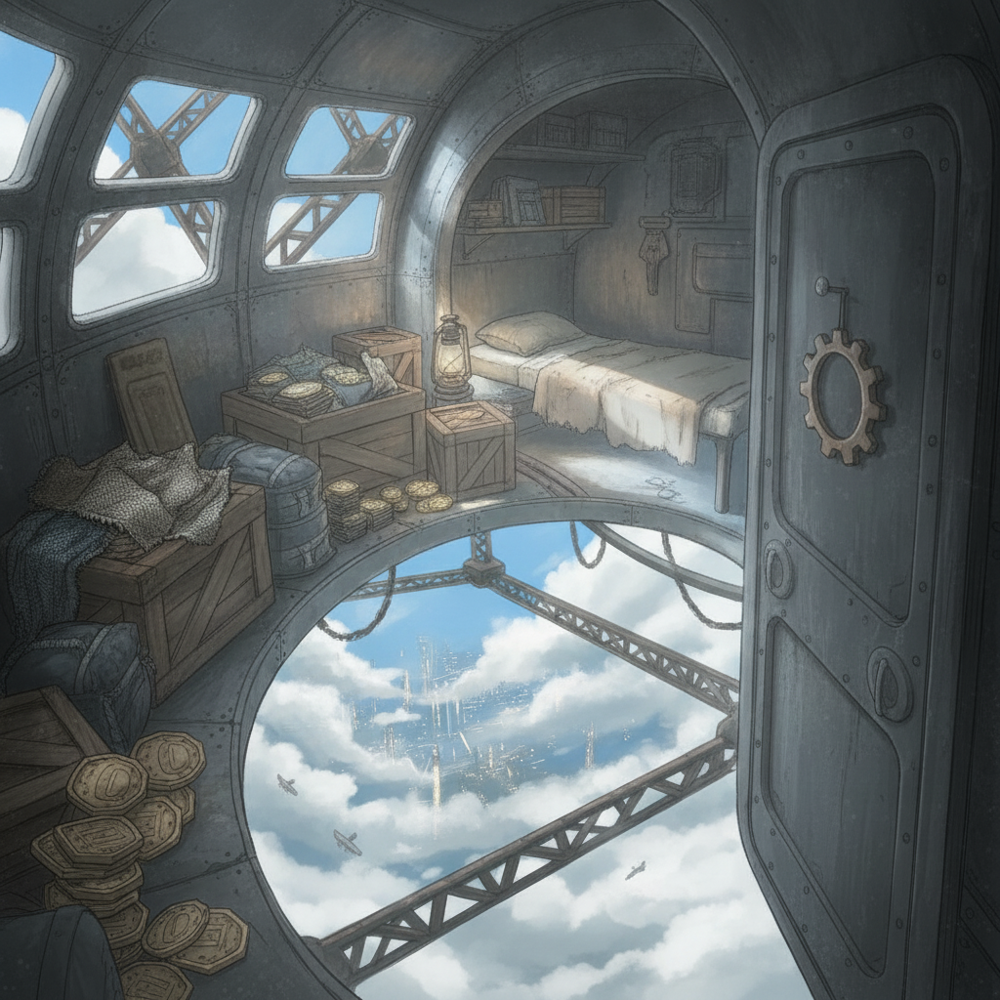

High in a disused mooring-mast is one of Wren's bolt-holes. It's cramped, filled with crates of contraband weaves and forged transit-tokens. Wind moans through the girders.
Threading the fugitive networks, Wren and I piece together the terrifying truth: the Assayers' program of mass severing isn't about policing. It's a harvest.
The revelation hits hard. The College, the Governors, the entire system—all built on exploitation.
Then, the news of the executed pair. For Wren, it's a stark, personal terror. Exactly the fate she has fought to avoid, now a brutal reality for someone we knew.
The air in the bolt-hole feels heavy with unspoken vows. We are no longer just surviving.